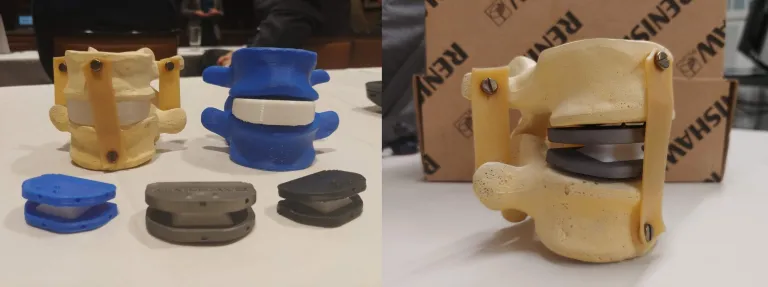
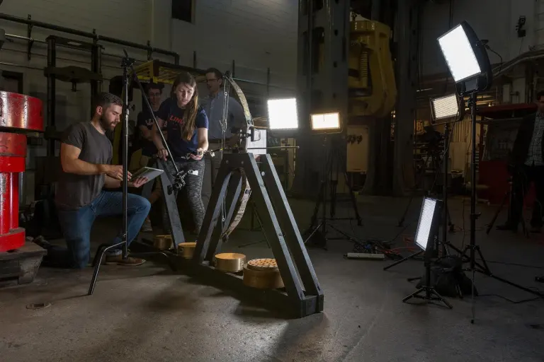
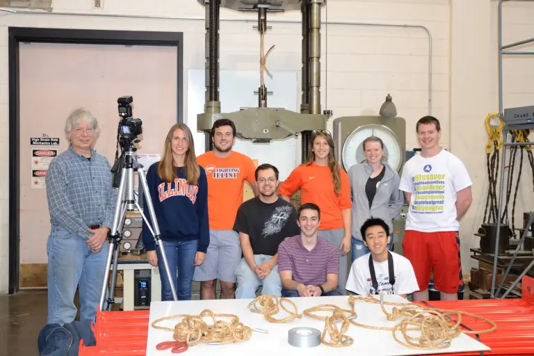
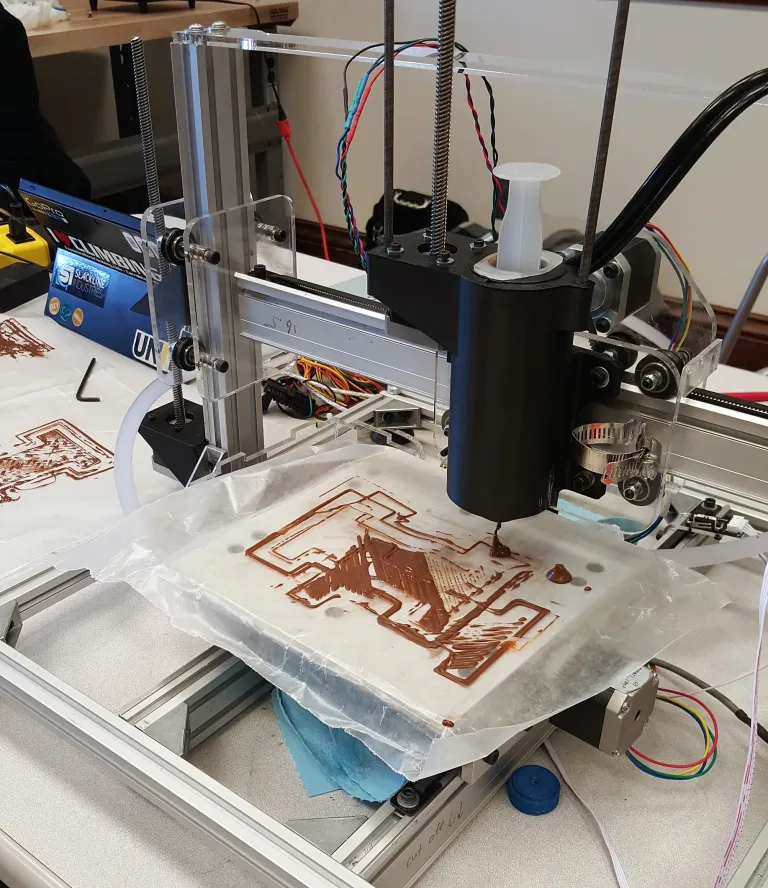

Spinal Implant

I've always been fascinated by prosthetic and assistive devices. As a part of a graduate course on Orthopedic Biomechanics (ME 598) started by my Master's advisor, Professor Mariana Kersh, I had the opportunity to design an artificial disc replacement for the L4-L5 vertebrae. Lower back pain is one of the leading causes of hospital visits in the world. A major cause of lower back pain is degenerative disc disease which is often corrected via spinal fusion. Fusion of the vertebrae is effective, but limits mobility. There are multiple spinal implants on the market today, however none of them are reliable enough for regular use. Many spinal implants have similar designs, so one of our goals was to design something completely different. We decided to design our implant as fully constrained, replicating the desired range of motion through the flexibility of the artificial disk material and geometry. This design avoids sliding and rubbing between components, preventing the generation of potentially harmful wear particles. The design is also fully constrained and secured via spikes into the vertebrae to avoid one of the greatest causes of failure in disk implants: dislocation. Another factor complicating artificial disk implant success is the damage caused during the implant procedure. Ideally, this design would be implanted through a lateral approach. Most spinal surgeries, especially fusions and disc replacements, are performed through the abdomen or the back. There are large ligaments supporting the spine in these regions and damage to them can lead to degradation of the facet joints, another leading cause of lower back pain.
EMG Controlled Motors
Video will be added back soon
For the Mechatronics course (GE 423) at UIUC, my final project was putting together an EMG sensor that could control stepper motors. The ultimate goal was to develop a rudimentary assistive device which would be able to bend the knee based on the signals of the hamstring and quadriceps muscles. I was inspired to work on this project because I had torn my ACL the year before and during the recovery process, muscle atrophy limited my ability to perform certain exercises. A device such as this would be able to assist with motion so individuals could return to regular, evenly distributed activity.
Society for Engineering Mechanics
Throughout my time at the University of Illinois, I was heavily involved in the Society for Engineering Mechanics (SEM). This provided me with multiple exciting opportunities for projects, outreach, and social activities.
Bow and Arrow Analysis

As a part of the SEM, I worked closely with the TAM 2XX SIIP committee to help improve demonstrations for the courses. One of the largest projects that we worked on was capturing slow motion video while collecting data of a long bow and a recurve bow firing. The demonstration is meant to help explain the difference in energy transfer between the types of bows. This project required a stand to secure the bow, a method to pull back the string while measuring the required force, and a release mechanism. We used an electronic force gauge, ratchet, string, and a bow release to pull back the bow string in controlled increments while recording the force required to draw back the string. Once the draw/fire mechanism was developed, we built a simple frame out of 2x4s to hold the bow. We added a ruler in plane with the bow to allow for physical scaling and calculations from the high speed video. One of the biggest challenges in this project was holding the bows in place. At first, we thought it would be fine to cut some foam and clamp the bows in place. Early testing revealed that the clamping pressure and foam we were using was not sufficient. A sophomore at the time, Jungjeo Jong, worked in a materials research group. He used a high density foam and molded custom mounts for each of the bows. We coordinated with the Center for Innovation Teaching and Learning, a lab group that let us use a high speed camera, and the head of the Southwark Emery Testing Facility to organize the day of the experiment.
Egyptian Pulley

When I became president of SEM, I took charge of the Egyptian Pulley Project. This project was brought to the student organization by UIUC alum Mr. Stephen Blakely. This project is based on determining how the Egyptians could have built the pyramids. Mr. Blakely has been investigating the theory that they used pulleys and has maintained a website dedicated to his findings: https://egyptianpulley.com/. He previously sponsored a senior design project in which they built a scaled version of a granite pulley and it performed exceptionally well. The project presented to the student organization was to determine whether the knots and rope that they had at the time would be strong enough to pull the blocks up the side of the pyramid. To test the strength of the rope, we designed an experiment using a Reihle Testing Machine and two pulleys. We started with manila rope and determined which knots were strongest. Our plan repeat our experiments using samples of handmade halfa grass rope, a material used in rope making in ancient Egypt. Unfortunately, we were not able to test on the Halfa grass rope during my time at Illinois.
Chocolate 3D Printer

During my first few years in SEM, I had the opportunity to help start this project. Our goal was to create a 3D printer, from scratch, that could print chocolate instead of standard materials. I was responsible for the electronics, including the housings and mounts for the components.